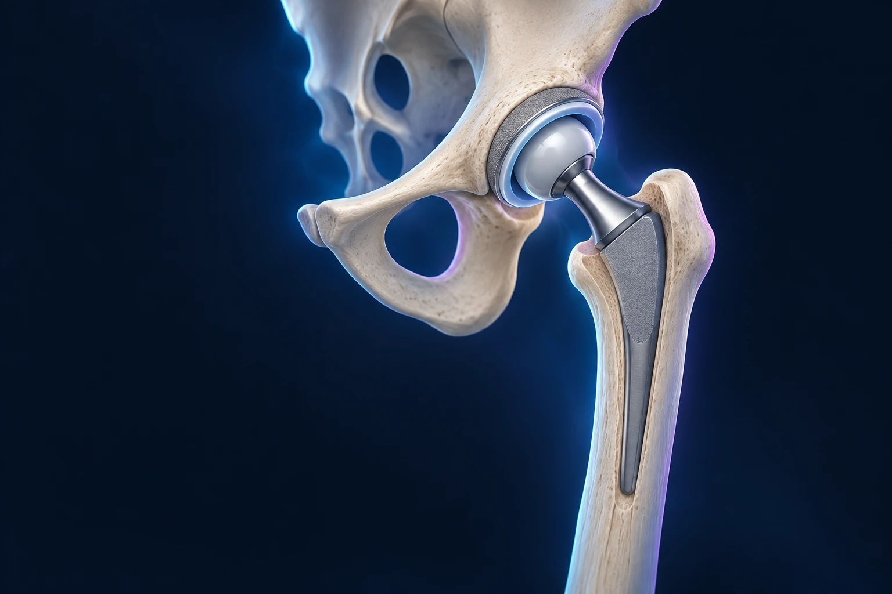

Comment préparer son retour à la maison avant une prothèse de hanche ?
Publié le

Préparer une prothèse de hanche ne consiste pas seulement à choisir une date d’opération. L’organisation du domicile, les déplacements, les médicaments et l’aide disponible influencent les premiers jours de récupération. Anticiper ces points avec l’équipe permet de rentrer avec des consignes comprises et des solutions adaptées à votre quotidien.
Que change une prothèse de hanche ?
L’intervention remplace les surfaces articulaires abîmées par des composants prothétiques. Elle vise notamment à réduire les douleurs d’origine articulaire et à améliorer la fonction. La récupération demande ensuite de retrouver une marche et une autonomie compatibles avec votre état de santé.
Préparer le retour ressemble à organiser un itinéraire avant un voyage. Le point d’arrivée est connu, mais les étapes, les moyens de transport et les aides doivent être précisés. Une préparation simple évite d’avoir à résoudre toutes les difficultés au moment où vous êtes encore fatigué par l’intervention.
Commencez par décrire votre logement et votre journée habituelle. Vivez-vous seul ? Y a-t-il des escaliers ? Devez-vous vous occuper d’un proche ? Les réponses aident l’équipe à prévoir le parcours de sortie. Elles ne doivent pas être réservées au dernier jour d’hospitalisation.
Que faut-il aborder lors du bilan préopératoire ?
Apportez la liste de vos traitements, y compris les produits pris sans ordonnance, et signalez vos allergies. Mentionnez vos maladies chroniques, les opérations antérieures et tout problème récent. Le chirurgien et l’anesthésiste organisent les vérifications utiles à votre situation.
N’arrêtez pas seul un anticoagulant ou un médicament habituel. Si une modification est nécessaire, vous devez savoir quel traitement est concerné, quand l’arrêter et quand le reprendre. Une consigne écrite permet de lever les ambiguïtés. Royal National Orthopaedic Hospital, préparation et parcours de remplacement articulaire.
Signalez également une infection, une plaie ou un changement de santé survenu après la consultation initiale. Une nouvelle information peut conduire l’équipe à réévaluer l’organisation. La date prévue ne doit pas empêcher de signaler un événement médical.
Peut-on agir sur sa condition physique avant l’opération ?
Selon votre tolérance, l’équipe peut proposer des exercices pour entretenir la force et la mobilité. Le but n’est pas de réaliser un entraînement intensif sur une hanche douloureuse, mais de préserver ce qui peut l’être. Demandez quels exercices sont adaptés et lesquels doivent être évités.
Le tabac, l’alimentation et l’équilibre des maladies chroniques font aussi partie de la préparation. Si vous avez besoin d’aide pour arrêter de fumer ou pour adapter votre activité, parlez-en tôt. Un accompagnement concret est préférable à une consigne générale difficile à appliquer seul. NHS, préparer une prothèse de hanche.
Profitez de cette période pour découvrir les aides à la marche si elles sont prévues. Savoir les régler et les utiliser peut rendre les premiers déplacements plus simples. La technique sera ensuite ajustée selon les consignes données après l’intervention.
Comment rendre le domicile plus facile à utiliser ?
Dégagez les passages et retirez les obstacles mobiles qui pourraient faire trébucher. Placez les objets fréquemment utilisés à une hauteur accessible. Prévoyez un éclairage suffisant pour les déplacements nocturnes et une place pour poser les béquilles sans les laisser au milieu du passage.
La hauteur des sièges, l’accès aux toilettes et à la douche peuvent demander des adaptations. Avant d’acheter un équipement, demandez ce qui est réellement utile pour votre logement et vos capacités. Un accessoire mal adapté peut être encombrant sans apporter de bénéfice.
Préparez quelques repas et identifiez une personne pouvant vous aider pour les courses ou le ménage. Si votre entourage n’est pas disponible, indiquez-le à l’équipe. Le retour à domicile doit être organisé sur votre situation réelle, sans supposer une aide qui n’existe pas.
Quelles consignes faudra-t-il comprendre avant la sortie ?
Vous devez connaître les modalités d’appui, les exercices recommandés, les soins de cicatrice et les traitements prescrits. Demandez comment utiliser les médicaments contre la douleur et à qui vous adresser si le soulagement est insuffisant ou si un effet indésirable apparaît.
Les précautions concernant certains mouvements varient selon l’intervention et le patient. Les consignes d’un proche opéré auparavant ne sont pas forcément les vôtres. La marche et les exercices progressent avec l’équipe, en privilégiant la sécurité et la qualité des mouvements. Cambridge University Hospitals, conseils après prothèse totale de hanche.
Avant de partir, reformulez le programme avec vos propres mots. Pouvez-vous expliquer comment vous lever, vous déplacer et contacter l’équipe ? Cette vérification évite qu’une consigne entendue pendant l’hospitalisation reste floue une fois rentré.
Comment prévoir les transports et la reprise du quotidien ?
La conduite ne reprend pas automatiquement au retour à domicile. Elle demande une récupération compatible avec les gestes nécessaires et l’absence d’effets médicamenteux gênant la vigilance. Organisez les trajets pour les soins et les rendez-vous avant l’opération.
Si vous habitez à Montpellier, à Sète ou dans une commune éloignée de l’Hérault, précisez les distances et les possibilités de transport. Demandez également quand envisager le travail, en décrivant les déplacements et les contraintes de votre poste. La récupération d’un emploi assis et celle d’une activité physique ne se planifient pas de la même façon.
Une douleur nouvelle importante, une cicatrice qui coule, de la fièvre ou un mollet douloureux et gonflé nécessitent un avis rapide. Un essoufflement soudain ou une douleur thoracique imposent d’appeler le 15 ou le 112. Gardez les coordonnées de suivi dans un endroit facile à retrouver.
Quelles questions garder pour le dernier rendez-vous ?
Vérifiez les aides prévues, les traitements, les soins, les rendez-vous et les moyens de contact. Si quelque chose reste incertain, faites-le préciser avant l’hospitalisation. Vous pouvez aussi venir accompagné d’une personne qui vous aidera à domicile, si vous le souhaitez.
Les informations du Dr François Lozach sur la chirurgie de la hanche complètent cette préparation. Pour discuter du parcours et de vos contraintes, vous pouvez prendre rendez-vous avec le Dr François Lozach à Sète.
Ces conseils sont d’ordre général et ne remplacent pas un avis médical personnalisé.